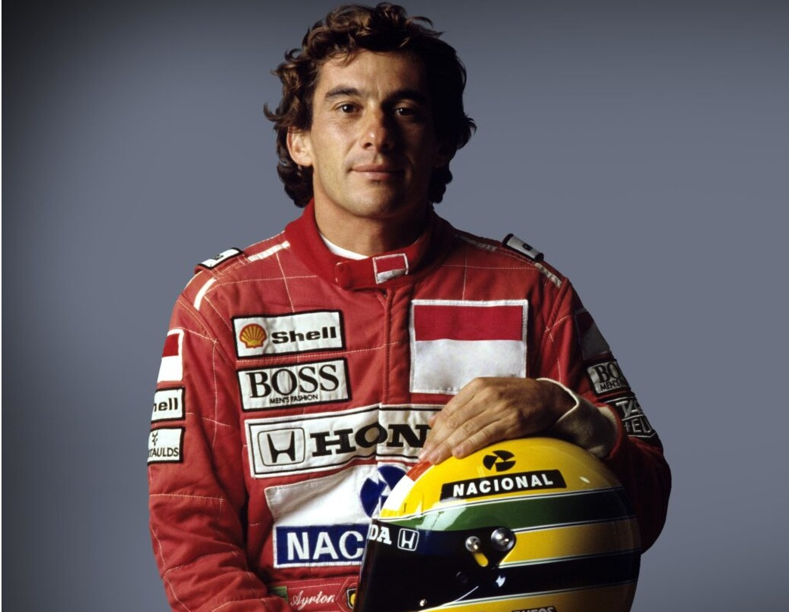

Seu nome é Ayrton Senna da Silva.
Ele foi um dos maiores pilotos de Fórmula 1 de todos os tempos. Conhecido como: "O Chefe", "O Rei de Mônaco", "Magic Senna" e também como "O Rei da Chuva"
Ayrton Senna da Silva (São Paulo, 21 de março de 1960 – Bolonha, 1 de maio de 1994) foi um piloto de Fórmula 1, empresário e filantropo brasileiro. Senna foi campeão da categoria de piloto três vezes, em 1988, 1990 e 1991.
Começou sua carreira competindo no kart em 1973 e em "carros de fórmula" em 1981, quando venceu as Fórmulas Ford 1600 e 2000. Em 1983 alcançou o título de campeão do Campeonato Britânico de Fórmula 3 batendo vários recordes. Seu desempenho impulsionou sua ascensão à Fórmula 1, fazendo sua primeira aparição na categoria no Grande Prêmio do Brasil de 1984 pela equipe Toleman-Hart. Em sua primeira temporada, Senna pontuou em cinco corridas, fechando o ano com treze pontos e a nona posição na classificação geral dos pilotos. No ano seguinte, ingressou na Lotus-Renault, pela qual venceu seis grandes prêmios ao longo de três temporadas.
Em 1988, juntou-se ao francês Alain Prost na McLaren-Honda, com o qual teve grande rivalidade. Senna venceu oito etapas daquela temporada e sagrou-se campeão mundial pela primeira vez. Após a polêmica final de 1989 com Prost que resultou na segunda colocação do torneio, ele retomou o título em 1990, vencendo novamente na temporada seguinte, tornando-se o piloto mais jovem a conquistar um tricampeonato na Fórmula 1 até então. Em 1993, Senna foi vice-campeão, vencendo cinco corridas. Transferiu-se para a Williams em 1994, onde disputou apenas três etapas, a última sendo o Grande Prêmio de San Marino, onde se acidentou e morreu, no Circuito de Ímola. Ao todo, Senna participou de 161 grandes prêmios na Fórmula 1, alcançando 41 vitórias, 80 pódios, 65 pole positions e 19 voltas mais rápidas.
Além das corridas de carros, Senna dedicava-se a jet skis, motos, aeromodelos e principalmente helicópteros. Também administrava diversas marcas e empreendimentos, além de ter patrocinado vários programas de assistência filantrópica, principalmente os ligados a crianças carentes. Depois de morrer, sua irmã, Viviane Senna, fundou o Instituto Ayrton Senna, uma organização não governamental que oferece oportunidades de desenvolvimento humano a crianças e jovens de baixa renda. Além disso, o personagem Senninha foi criado com a intenção de atingir o público infantil com os ideais do piloto, como a superação, dedicação e o gosto pela vitória.
Sua morte, assim como o funeral e velório, provocou uma das maiores comoções da história do Brasil, bem como repercussão mundial. Em pesquisas feitas com jornalistas especializados, pilotos e torcedores, foi amplamente considerado o melhor piloto da história da Fórmula 1 e um dos maiores automobilistas de todos os tempos.Em 1999, foi eleito pela revista Isto É o esportista do século XX no Brasil. No auge de sua carreira, era considerado o maior ídolo brasileiro, posto que mantém mesmo depois de três décadas após a sua morte. Em 1º de maio de 2024, o Globoplay lança uma série documental intitulada Senna por Ayrton. Nessa atração, foram usadas cerca de 150 horas de gravações de entrevistas de Senna para que a narração do documentário fosse feita em primeira pessoa, com ele narrando a própria história.
Filho do empresário Milton Guirado Theodoro da Silva e de Neyde Joanna Senna da Silva, Ayrton Senna nasceu em 21 de março de 1960, na Maternidade de São Paulo, no bairro de Cerqueira César, São Paulo. A mãe de Senna era neta de imigrantes italianos e o seu pai era filho de uma espanhola (de Tíjola, em Almeria) com um paulista.
Passou sua infância e adolescência na Zona Norte de São Paulo, cresceu no bairro onde seu pai, Milton da Silva e seu avô paterno, Antônio Teodoro da Silva nasceram, Santana. Morou no centro do bairro nos primeiros quatro anos de vida, na casa que pertencia seu avô, nas imediações do Aeroporto Campo de Marte. Já no Jardim São Paulo viveu dos quatro aos doze anos, entre as décadas de 1960 e 1970, mudando-se posteriormente para o distrito do Tremembé. Durante sua formação escolar, estudou em instituições tradicionais da região, como o Colégio Jardim São Paulo, onde estudou no pré-escolar, e no extinto Colégio Santana (1º ao 4º ano), saindo pois a instituição católica não possuia turmas masculinas no ginásio. Concluiu seus estudos no Colégio Rio Branco em Higienópolis.
Desde novo ele se interessava por automóveis. Foi incentivado pelo pai, um entusiasta das competições automobilísticas e dono da Universal metalúrgica — a maior fábrica de autopeças de São Paulo na época, que montou o primeiro kart de Senna quando este tinha quatro anos, e que tinha um motor de máquina de cortar grama. Aos nove anos, já conduzia jipes pelas estradas dentro das propriedades rurais de Milton. Praticava kart nas imediações da rua Aviador Gil Guilherme e avenida Santos Dumont, segundo o livro "Ayrton – O Herói Revelado" de Ernesto Rodrigues,e na área alta do bairro de Parque Palmas do Tremembé. Na televisão, gostava de assistir o anime Speed Racer, sobre um piloto de corridas.
Senna atraiu a atenção de diversas equipes de Fórmula 1 como Williams, McLaren, Brabham e Toleman. Ao contrário do que se imagina, seu compatriota Nelson Piquet não se opôs à sua contratação pela Brabham. A patrocinadora da equipe, a Parmalat, tinha mais interesse em ter um piloto italiano na equipe do que ter dois brasileiros, influenciando na decisão da equipe em contratar o piloto italiano Teo Fabi para a temporada. Senna, imaginando que Piquet tinha mais influência na equipe, ficou ressentido, declarando em uma entrevista que "Ele (Piquet) não ajudou e nem atrapalhou", dando a entender que sua ida à Brabham foi vetada pelo então bicampeão mundial. Assim, das três remanescentes, apenas a equipe Toleman ofereceu a ele um carro para disputar o campeonato do ano de 1984.
Senna marcou seu primeiro ponto no campeonato mundial de pilotos logo no segundo grande prêmio que disputou, em Kyalami na África do Sul. Ele repetiu o resultado duas semanas depois, no Grande Prêmio da Bélgica, disputado no circuito de Zolder. Uma semana depois, o piloto brasileiro não conseguiu tempo para o Grande Prêmio de San Marino, em Imola. Tal fato aconteceu devido a um desentendimento entre a equipe Toleman e a fábrica italiana de pneus Pirelli, Ayrton e seu companheiro de equipe, Johnny Cecotto, não puderam participar dos treinos de sexta-feira. No sábado, sob chuva intensa, Ayrton Senna foi o piloto mais rápido na pista molhada, mas longe das marcas obtidas pelos seus adversários no dia anterior na pista seca. Depois, porém, com a pista seca, com muitos problemas no motor turbo Hart de seu Toleman, Senna se viu impedido de fazer um bom tempo.
Uma semana antes do GP de Mônaco de 1984, ele participou do evento promocional Corrida dos Campeões de Nurburgring, ao lado de ex-campeões da F-1, como Sir Stirling Moss, Jack Brabham, John Surtees, Phil Hill, Niki Lauda e o futuro campeão Alain Prost. Todos correram com o mesmo carro de rua - um Mercedes 190 E 2,3 - 16 - e Senna chegou em primeiro, logo à frente de Niki Lauda.
Senna venceu a corrida de exibição feita para celebrar a inauguração do novo Nürburgring em 1984.
No GP de Mônaco, seu desempenho trouxe-lhe todas as atenções das demais equipes. Classificou-se em 13º no grid de largada, e fez um rápido progresso através das estreitas ruas de Monte Carlo. Na volta 19, passou Niki Lauda, que estava em segundo, e começou a ameaçar o líder Alain Prost, e continuou por várias voltas lutando pelo primeiro lugar com seu limitado Toleman. A esta altura já chovia muito no circuito e a corrida foi interrompida na volta 31 por razões de segurança. Senna chegou a comemorar a vitória ultrapassando Alain Prost a poucos metros da linha de chegada, mas, nesses casos, o regulamento mandava considerar as colocações da volta anterior e, ainda, por ter sido interrompida com menos da metade da corrida, os pontos deveriam ser computados pela metade. Senna ainda ganharia dois pódios naquele ano - terceiro no Grande Prêmio da Grã-Bretanha, em Brands Hatch, e no GP de Portugal, em Estoril. Isso o deixou empatado com Nigel Mansell com treze pontos, apesar de ter perdido o GP da Itália quando a Toleman o suspendeu de correr por quebra de contrato, depois de ele ter assinado com a Lotus para a temporada seguinte. Suas atuações fizeram-no a revelação da temporada, segundo revistas especializadas.
Ainda em 1984, Senna tomou parte nos 1000 km de Nürburgring, onde pilotou o Porsche 956, correndo em parceria com Henri Pescarolo e Stefan Johansson. Apesar de ser sua estreia nesse tipo de competição, Ayrton Senna conseguiu fazer a melhor volta em três oportunidades durante a corrida, tanto em pista seca como em condições de chuva, além de marcar o sétimo melhor tempo, embaixo de chuva. Somados os tempos dos três pilotos, a equipe largou em nono lugar. No final, a equipe de Ayrton terminou em oitavo lugar sendo prejudicada por um problema que obrigou o carro a ficar parado durante 17 minutos, aproximadamente oito voltas. A equipe acreditava na época que sem o referido problema, o carro chegaria em terceiro lugar. Esta corrida, juntamente com a Corrida dos Campeões de Nurburgring, foram as únicas que Senna realizou correndo em carros com cockpit fechado.
Em novembro de 1984, Ayrton sofreu uma paralisia facial, que a princípio se pensou ser um derrame. Na verdade, era uma paralisia facial periférica, resultado de uma mastoidite, inflamação do nervo mastoide, responsável pelos comandos do cérebro à musculatura facial. No princípio, Senna tratou a doença com altas doses de cortisona, porém, com medo de efeitos colaterais, experimentou um tratamento alternativo com o médico Haruo Nishimura. No entanto, o tratamento não surtiu efeito, tendo assim que voltar ao tratamento convencional. O problema foi resolvido quando o preparador físico Nuno Cobra começou a tratar do piloto.
Na Lotus, em 1985, tinha como parceiro o italiano Elio De Angelis. Senna largou em quarto na sua primeira corrida pela nova equipe na abertura da temporada no Brasil, no circuito de Jacarepaguá, no Rio de Janeiro, mas abandonou a prova devido a problemas elétricos. Na segunda corrida do ano, o GP de Portugal, disputado no Autódromo do Estoril, em 21 de abril de 1985, conseguiu sua primeira vitória na Fórmula 1, largando na pole position sob pesada chuva. Alain Prost, em segundo, abandonou depois de bater no muro. Ayrton Senna conseguiu sua segunda vitória, também sob chuva, no GP da Bélgica, no circuito de Spa-Francorchamps. Graças ao seu excelente desempenho nos treinos e ao motor Renault, Senna passaria a ser o "rei das pole positions". Encerraria o ano com uma corrida marcante no GP da Austrália, quando repetiu um feito de seu ídolo Gilles Villeneuve e pilotou um bom tempo sem o bico do carro, saindo várias vezes da pista, mas mantendo a segunda posição. O carro mais uma vez não aguentou o esforço e Senna abandonou a corrida. Senna terminou a temporada em 4º lugar no Campeonato Mundial de Pilotos com 38 pontos e seis pódios (duas vitórias, dois segundos e dois terceiros lugares), além de sete pole positions. Devido ao seu desempenho, foi eleito o mais popular e o melhor piloto da temporada segundo a revista Autosprint.
Em 1986, a Lotus escolheu o escocês Johnny Dumfries como parceiro, com o aval de Senna, que vetou o inglês Derek Warwick sob a alegação de que a Lotus não tinha condições de manter carros competitivos para dois pilotos de ponta ao mesmo tempo. A nova Lotus 98T mostrou ser mais confiável em 1986 e a temporada começou bem para Senna, que terminou em segundo na corrida vencida pelo também brasileiro Nelson Piquet, no GP do Brasil em Jacarepaguá. Reconhecendo estar com um carro inferior aos da Williams e McLaren, Senna passou a adotar uma estratégia de não parar para trocar pneus, buscando ficar na frente dos adversários o maior tempo possível. Com essa tática, ele passou a liderar o campeonato pela primeira vez na carreira, depois de vencer o GP da Espanha, em Jerez de la Frontera, no qual bateu a Williams de Nigel Mansell por 0,014s - uma das menores diferenças de chegada da história da F1.
Todavia, a liderança do campeonato não foi mantida por muito tempo, já que Senna abandonou diversas outras corridas por problemas mecânicos. A caça ao primeiro título mundial acabou sendo uma luta entre Prost e sua McLaren-TAG e a dupla Piquet e Mansell da Williams-Honda. Na Hungria, um circuito ainda mais travado (onde as ultrapassagens são mais difíceis), repetiu uma vez mais a estratégia, mas foi ultrapassado por Nelson Piquet. Ainda nesse ano, Senna se tornaria definitivamente um ídolo no Brasil ao conquistar sua segunda vitória na temporada no GP dos Estados Unidos, disputado em Detroit, e terminou o campeonato novamente na quarta colocação, com 55 pontos, oito poles e seis pódios.
Ainda em 1986, a convite da revista britânica Cars and Car Conversions, Senna fez testes em carros de rally (ele dirigiu um Vauxhall Nova 1.3, um Golf GTi do Grupo A, um Ford Sierra Cosworth RS, um Ford Escort V6 3.4 de tração integral e um Austin Metro 6R4 do Grupo B - com o mesmo V6 que acabou no Jaguar XJ220), porém com apenas 250 cv. A matéria rendeu oito páginas. Mais tarde, esta edição tornar-se-ia artigo de colecionador e um dos raríssimos exemplares chegou a custar £ 100 no eBay.uk. Os testes foram realizados no País de Gales e o trajeto escolhido tinha 2,4 km e fazia parte de uma região de florestas, usado em etapas especiais de ralis britânicos. Os testes também serviram de tema da capa da revista italiana Autosprint, sob o título de "Senna Rallista!
O ano de 1987 veio com muitas promessas de dias melhores. A Lotus tinha um novo patrocinador, o Camel, e o mesmo poder dos motores Honda das Williams depois que a Renault decidira se retirar do esporte. Depois de um começo lento, Senna ganhou duas corridas em seguida: o prestigioso GP de Mônaco (a primeira do recorde de seis vitórias no principado) e o GP dos Estados Unidos em Detroit (nesse sem trocar os pneus, sendo o único piloto da zona de pontuação que não fez pit stops), também pelo segundo ano seguido, e mais uma vez chegou à liderança do campeonato. Nesse momento, a Lotus 99T Honda parecia ser mais ou menos igual aos ótimos Williams-Honda, mais uma vez pilotados por Piquet e Mansell. Mas, apesar da performance do 99T, que usava a tecnologia da suspensão ativa, as Williams FW11B de Nelson Piquet e Nigel Mansell eram ainda carros a serem batidos. A diferença entre as duas equipes nunca foi tão evidente quanto no GP da Grã-Bretanha, em Silverstone, onde Mansell e Piquet voaram sobre as Lotus de Senna e seu parceiro Satoru Nakajima. Depois de rodar na pista devido a uma falha na embreagem a três voltas do final no GP do México, Senna ficou fora da luta pelo campeonato, deixando Piquet e Mansell brigando por ele nas últimas duas corridas
Mansell feriu-se nas costas em um grave acidente durante os treinos para o GP do Japão de 1987, em Suzuka, deixando o campeonato nas mãos de Piquet. Entretanto, isso significava que Senna poderia terminar a temporada em segundo lugar se ele terminasse a corrida entre os três primeiros nas duas corridas que faltavam - Japão e Austrália. Terminou as duas em segundo, mas as medições feitas no carro depois do GP da Austrália constataram que os dutos dos freios eram mais largos do que o permitido pelo regulamento e Senna foi desclassificado, dando à Lotus a sua última temporada bem-sucedida. Ele acabou classificado em terceiro na colocação final, com 57 pontos, uma pole e oito pódios (duas vitórias, quatro segundos e dois terceiros). Essa temporada marcou uma reviravolta na carreira de Senna depois de ele ter construído uma profunda relação com a Honda, que lhe rendeu grandes dividendos. Ayrton foi contratado pela McLaren, que acertou com a Honda o fornecimento de motores V6 Turbo para 1988.
Em 1988, as McLaren-Honda ostentavam os números 11 e 12, desta vez com a dupla Alain Prost e Ayrton Senna. Um dos principais momentos da temporada de 1988 aconteceu em Mônaco. Durante os treinos oficiais, Ayrton fez a pole position com uma vantagem de 1:427 para Alain Prost. Nos treinos, segundo o brasileiro, ele estava guiando em outra dimensão e, de certa forma, não tinha uma total consciência do que estava acontecendo. Na corrida, Ayrton liderava com uma margem de quase 1 minuto para o segundo colocado, o francês Alain Prost. No entanto, o tricampeão mundial acabou batendo na 66ª volta, dando a vitória ao adversário francês
No GP do Japão, Senna, que largava na pole, não conseguiu largar e caiu para 17ª posição. Entretanto, já nas primeiras voltas, Ayrton ultrapassou oito adversários. Na 28ª volta, Senna ultrapassou Prost e terminou ao final da prova com 13 segundos de vantagem para o francês, conquistando o título.
Logo após o primeiro título mundial, Senna participou do especial de Roberto Carlos na TV Globo afirmando que, nas últimas voltas do GP do Japão, o qual lhe garantiu o título com uma vitória, ele teve uma visão do que ele achava ser Deus.[64][65] Senna pilotou a McLaren MP4/5 em 1989. Nesse ano, a rivalidade entre ele e Alain Prost se intensificou, notadamente a partir do GP do Japão, mantendo-se entre as temporadas de 1990 e 1991.
No GP de Mônaco de 1989, Ayrton novamente abriu uma vantagem sobre o francês acima de 50 segundos, alcançando a vitória desta vez. Senna disse, logo após a prova, que seu carro tinha perdido as duas primeiras marchas e, por conta disso, precisou mudar sua forma de pilotagem. Algo parecido aconteceria no GP Brasil de 1991.
Prost conquistou o tricampeonato em 1989, depois de uma colisão com Senna durante o GP do Japão, em Suzuka, penúltima corrida da temporada, e que Senna precisava vencer para ter chances de conquistar o campeonato mundial na última etapa. Senna tentou ultrapassar Prost na chicane, os dois "tocaram" os pneus e foram para fora da pista com os carros entrelaçados, Senna retornou à pista auxiliado pelos fiscais, que empurraram seu carro pois o motor havia apagado e ele foi direto aos boxes para reparar o bico do carro danificado na manobra. Voltando à pista, tirou a liderança de Alessandro Nannini, da Benetton, e chegou em primeiro, sendo desclassificado pela FIA por cortar a chicane depois da colisão com Prost. A penalização e a suspensão temporária de sua superlicença - que é a habilitação de um indivíduo para pilotar carros de F1 - fez com que Senna travasse uma batalha de palavras com a FIA e seu presidente Jean-Marie Balestre. Anos mais tarde, em 1996, já fora da presidência da FIA, Balestre admitiu que beneficiara o compatriota naquele final de campeonato
Em 1990, no mesmo circuito e com os dois pilotos novamente disputando o título mundial, Senna tirou a pole de Prost. A Ferrari de Prost fez uma largada melhor e pulou à frente da McLaren de Senna, que antes mesmo da largada havia declarado que não permitiria uma ultrapassagem de Prost. Na primeira curva, Senna tocou a roda traseira de sua McLaren na Ferrari de Alain Prost a 270 km/h, levando os dois carros para fora da pista. Ao contrário do ano anterior, desta vez o abandono dos pilotos deu a Senna o seu segundo título mundial. Neste ano, Senna conquistou o título mesmo com um equipamento inferior ao da Ferrari, notadamente a partir do meio da temporada.
A temporada de 1990 reservou um momento inusitado na história da Fórmula 1. Em setembro daquele ano, durante o GP de Monza, na Itália, Senna fez uma aposta com o chefe de equipe Ron Dennis. O chefe da McLaren não acreditava na vitória de Ayrton dentro da casa da Ferrari. O brasileiro decidiu propor uma aposta com Ron: caso conseguisse a vitória, ele ganharia o carro do triunfo de presente. Além de ter vencido a corrida, Senna fez a pole position, marcou a volta mais rápida da prova e liderou de ponta a ponta, sem dar chances para a Ferrari de Alain Prost, seu rival na disputa pelo título daquela temporada, que terminou na segunda colocação. A McLaren foi recebida pela família do piloto e hoje faz parte do acervo do Instituto Ayrton Senna
O GP Brasil de 1991 marcou a primeira vitória de Ayrton Senna em sua terra natal pilotando um Fórmula 1. Aliado a isso, o fato de a corrida ter possuído um final dramático, com a perda de quase todas as marchas de sua McLaren e o consequente desgaste físico acima do normal, fazendo com que ele não conseguisse sair do carro sozinho, fez dessa corrida uma das mais lembradas da carreira do piloto brasileiro.
Logo após a bandeirada final, a comunicação de rádio da equipe foi aberta na TV, no exato momento em que Ayrton gritava, em parte pela vitória inédita como também pelas dores que sentia devido ao desgaste da corrida. Ainda na pista, em seguida à conquista inédita de Senna, os fiscais de pista comemoravam a vitória do brasileiro com pulos e abraços.Mais tarde, Ayrton retornou a sua mansão na Zona Norte da cidade de São Paulo escoltado por policiais, devido à presença maciça de público em frente a sua residência. Em seguida, já em cima do muro que cerca a mansão, Senna acenou para o público presente
No dia seguinte à conquista em Interlagos, Senna concedeu uma entrevista coletiva no Aeroporto Campo de Marte, no bairro de Santana, Zona Norte de São Paulo. Além da grande presença de integrantes da imprensa e de público, o que chamou a atenção foi a história de Francisco Lins Silva, o "Chiquinho", então com doze anos, que caminhou cerca de cinco quilômetros da Freguesia do Ó até o Campo de Marte para conhecer o tricampeão mundial. Por volta de quatro meses depois, Chiquinho acabou por conhecer a mansão de Ayrton, além de visitar o quarto do seu ídolo
Em 1991, depois de conquistar seu terceiro título mundial, mesmo com um equipamento inferior em relação à Williams, Senna explicou à imprensa o que acontecera no ano anterior em Suzuka. Tinha como prioridade conseguir a pole, pois havia recebido informações seguras de que esta mudaria de lado, passando para a esquerda, o lado limpo da pista, somente para descobrir que essa decisão havia sido revertida por Balestre depois que ele conquistara a pole. Ao explicar a colisão com Alain Prost, Ayrton Senna disse que queria deixar claro que ele nunca iria aceitar as decisões injustas de Balestre, incluindo a sua desclassificação em 1989 e a pole de 1990.
Logo após a conquista do tricampeonato mundial de Fórmula 1 em 1991, Senna foi recebido com honras militares e de estadista na sua chegada na capital paulista. Primeiro, o avião no qual ele aportou em São Paulo foi acompanhado, no trecho final da viagem, por caças da Força Aérea Brasileira. Logo após, recebeu da então prefeita Luiza Erundina, a chave da cidade. Em seguida, desfilou em carro aberto pelas ruas da cidade. A princípio, a carreata seria feita em um caminhão do Corpo de Bombeiros, porém, com a negativa do próprio Ayrton, ele terminou desfilando em um carro conversível particular. A enorme quantidade de pessoas e automóveis aglomerados acabou por prejudicar o trânsito da cidade, além de ocasionar um acidente envolvendo cinco carros
Ainda em 1991, no Autódromo do Estoril, em Portugal, Ayrton participou de um desafio inusitado. Ele, com seu McLaren MP4/6, além de Gareth Rees, piloto que conquistaria o título da Fórmula 2 britânica em 1996, com um Honda Concerto, e Allan McNish, futuro tricampeão das 24 Horas de Le Mans, em 1998, 2008 e 2013, com um Porsche 911 Turbo, disputaram uma volta no autódromo português para constatar quão rápido era um carro de Fórmula 1. O primeiro a largar foi o Honda, 19,5 segundos depois foi a vez do Porsche e, 1 min 15 s após o Honda e 55,5 segundos após o Porsche, foi a vez da McLaren. Ao final da volta, Ayrton chegou à frente no desafio, com um tempo total de disputa de 2 min 28 s, sendo que 1 min 13 s foi o tempo marcado por Ayrton para completar a volta no circuito.
Em 1992, Senna chegou até a cogitar correr na Fórmula Indy. O primeiro incidente aconteceu durante treino no GP da Bélgica. Naquele treino, o piloto francês Erik Comas bateu violentamente contra o muro e ficou desacordado, com seu carro parado no meio da pista. Ao passar pelo local segundos após o acidente, Senna parou sua McLaren e correu em direção à Ligier/Renault, que vazava combustível e estava prestes a explodir. Percebendo que Comas estava desacordado no cockpit, Senna desligou a ignição do carro do companheiro e evitou o risco de um incêndio
Senna já havia tentado entrar para a Williams em 1993, mas foi impedido por Prost, que vetou seu nome. Ayrton Senna se ofereceu para pilotar por nada, pois seu desejo era fazer parte da vencedora equipe Williams-Renault, mas foi impedido por uma cláusula no contrato do francês que impedia o brasileiro de entrar para a equipe (Ato declarado no Filme "Senna"). Porém, essa cláusula não se estenderia até 1994, o que fez Prost se retirar das corridas um ano antes de vencer seu contrato, preferindo isso a ter seu principal rival como companheiro de equipe. Em 1994, Senna finalmente assinou com a equipe Williams-Renault.[38] Senna agora estava na equipe que havia ganho os dois campeonatos anteriores com um veículo muito superior aos demais. Prost, Senna e Damon Hill haviam ganho todas as corridas exceto uma, vencida por Michael Schumacher.
A pré-temporada de testes mostrou que o carro era rápido, mas difícil de dirigir. A FIA havia banido os sistemas eletrônicos, incluindo a suspensão ativa, o controle de tração e os freios ABS para fazer o esporte mais "humano". A Williams não se mostrou um carro equilibrado no início da temporada. O próprio Senna fez várias declarações de que o carro era instável e desajeitado, indicando que o FW16, depois de perder a suspensão ativa, os ABS e o controle de tração, entre outras coisas, já não oferecia a mesma superioridade mostrada pelos FW15C e FW14B dos anos anteriores. Apesar de menor potência, a equipe Benetton pilotada por Schumacher apontou como maior rival.
A primeira corrida da temporada 1994 foi no Brasil, disputada em Interlagos, quando Senna fez a pole. Na corrida, Senna assumiu a ponta, mas Michael Schumacher com a Benetton tomou a liderança depois de passar Ayrton Senna nos boxes na volta 21. Senna, determinado a vencer no Brasil, perdeu o controle de sua Williams, rodou na curva da Junção, ficando parado na zebra e abandonando a prova na volta 55. Durante os treinos para o Grande Prêmio do Brasil, algo muito raro aconteceu quando Senna narrou sua própria volta a bordo da Williams em transmissão ao vivo pela TV Globo.
A segunda prova foi no GP do Pacífico, disputado em Aida, no Japão, onde Senna novamente ganhou a pole, porém envolveu-se numa colisão já na primeira curva. Foi tocado atrás por Mika Häkkinen e sua corrida acabou definitivamente quando a Ferrari de Nicola Larini também bateu na sua Williams. Gerhard Berger, da Ferrari, terminou em segundo enquanto Schumacher venceu novamente
Luca Di Montezemolo, diretor da Ferrari naquela ocasião, informou que Senna veio até ele na quinta-feira anterior à prova de Ímola e elogiou a Ferrari pela batalha contra os eletrônicos na F1. Senna disse também que gostaria de encerrar sua carreira correndo pela Ferrari.
Em 1º de maio de 1994, durante o Grande Prêmio de San Marino, no circuito de Ímola, Ayrton Senna sofreu um acidente fatal. Na volta 7, o austríaco Roland Ratzenberger, da equipe Simtek, morreu após bater na curva Villeneuve. Ayrton Senna, que liderava a corrida, bateu na curva Tamburello na volta 7, a 310 km/h, e foi levado ao hospital Maggiore de Bolonha, onde foi declarado morto horas depois. A morte de Senna foi um dos maiores choques da história do esporte, e o fim de semana do GP de San Marino de 1994 é considerado um dos mais trágicos da história da Fórmula 1.
Ayrton Senna escreveu um livro em 1991 sobre as técnicas de pilotagem de um carro de corrida. A obra foi publicada na Itália e posteriormente lançada em outras línguas, como o inglês e português.